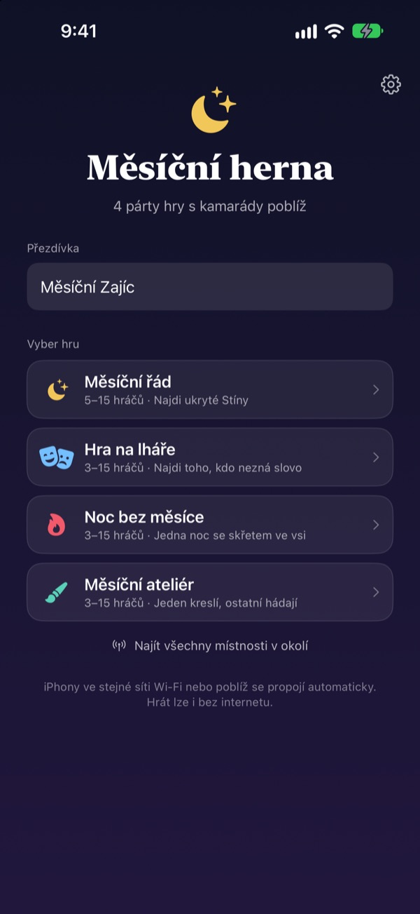
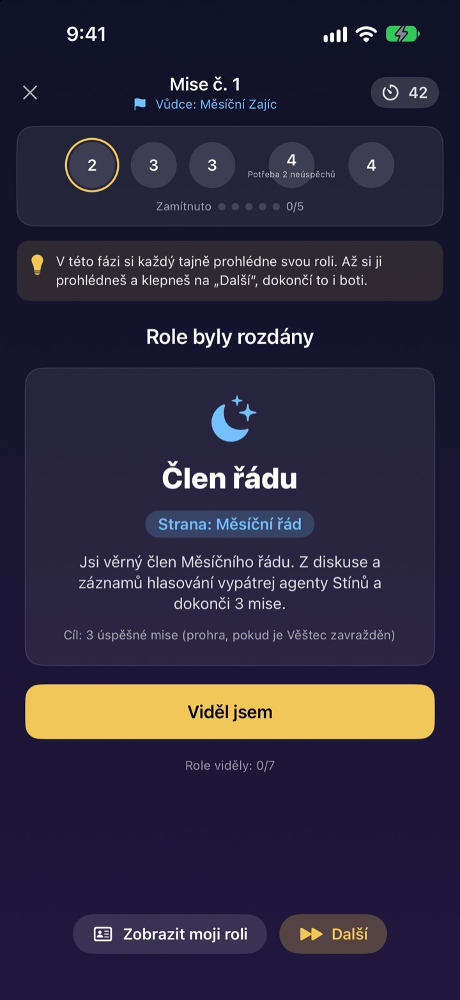
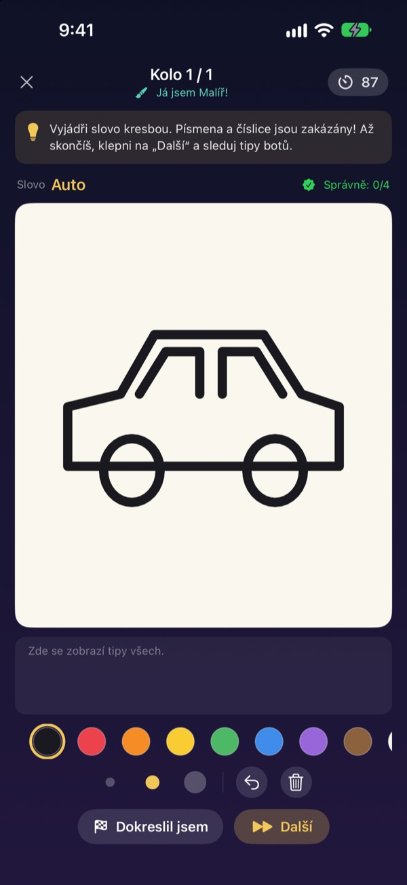
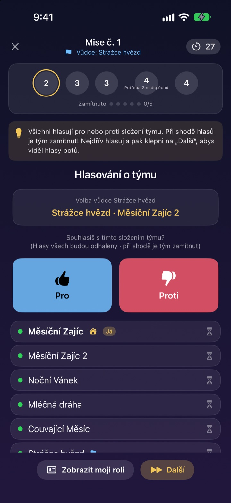

Všichni jsou tu?
Vytáhněte iPhony.
Jeden založí místnost a všichni poblíž se připojí během pár vteřin. Role a tajná slova vidí každý jen na své obrazovce: žádné kartičky a nikdo nemusí stát mimo hru jako vypravěč.
Všechny hry zdarma. Bez účtu a bez internetu.

Zahrajte si kolo Hry na lháře
Představte si pět iPhonů na stole a klepněte na ně jeden po druhém. Jen jeden hráč nezná slovo. Obrazovku si můžete s kamarády i posílat dokola.
Sešli jste se, ale nevíte, co hrát
Herní večer, víkend na chatě, Vánoce s rodinou. U her se skrytými rolemi musí někdo vypadnout ze hry a vypravovat a přeložené papírky nikdy nejsou úplně tajné. Na chatě se slabou Wi-Fi nejdou ani online hry. V Měsíční herně se o vedení hry, rozdání rolí i spojení postarají iPhony.
Tvoje role je jen na tvé obrazovce
Po startu dostane každý iPhone svou roli nebo slovo. Žádné rozdávání karet, žádné „všichni zavřete oči“.
Při hlasování je vidět jen, kdo už hlasoval. Kdo hlasoval pro koho, zůstane tajné až do odhalení.

Čtyři hry pro každou partu
Ve Hře na lháře rozhoduje výřečnost, v Měsíčním řádu lovíte Stíny přes výpravy a hlasování, v Noci bez měsíce hledáte za jedinou noc Skřeta a v Měsíčním ateliéru jeden kreslí a ostatní hádají.
Měsíční řád od 5 hráčů, ostatní od 3, všechny až pro 15.

Nová hra? Naučíte se ji za pár minut
Každá hra má režim Jak hrát, kde si s boty krok za krokem zahraješ celé kolo. Přečti si tip nahoře a klepni na Další.
Když se aplikace zavře nebo spadne spojení, klepni na hlavní obrazovce na Pokračovat a vrátíš se do stejného kola.

Začni ve třech krocích
- 1
Přezdívka a hra
Všichni otevřou aplikaci, napíšou přezdívku a vyberou hru.
- 2
Vytvořit nebo se připojit
Jeden vytvoří místnost, ostatní ji najdou přes Hledat místnosti v okolí.
- 3
Hostitel spustí
Až jsou všichni uvnitř, hostitel klepne na Začít hru. Zbytek obstará aplikace.
Čtyři hry
- Hra na lháře · 3–15 hráčů
- Všichni dostanou stejné slovo kromě jednoho. Po řadě ho popisují a pak hlasují o lháři. Když dopadený lhář slovo uhodne, stejně vyhraje.
- Měsíční řád · 5–15 hráčů
- Odhalte Stíny ukryté v Řádu. Vůdce vybere tým výpravy, všichni hlasují pro nebo proti a tým tajně odevzdá úspěch, nebo neúspěch. Vyhraje strana, která jako první získá tři výpravy.
- Noc bez měsíce · 3–15 hráčů
- Jediná noc a ve vesnici se skrývá Skřet. V noci tajně jednají Šaman, Noční zloděj a Šprýmař. Za úsvitu se diskutuje a na nalezení Skřeta je jen jedno hlasování.
- Měsíční ateliér · 3–15 hráčů
- Jeden kreslí slovo, ostatní hádají v chatu. Čím rychleji uhodneš, tím víc bodů, a kreslíř boduje za každou správnou odpověď.
Každou hru si můžeš nejdřív vyzkoušet sám s boty v režimu Jak hrát.
Časté dotazy
Nevidím místnost.
Zkontroluj, že hostitel a hráči jsou na stejné Wi-Fi nebo blízko sebe. Aby šlo najít zařízení v okolí, musí mít Měsíční herna zapnutý přístup v Nastavení ▸ Soukromí a zabezpečení ▸ Místní síť. Se zapnutou Wi-Fi i Bluetooth je spojení nejstabilnější.
Musím povolit přístup k místní síti?
Ano, díky tomu aplikace najde iPhony poblíž a spojí se s nimi. Pokud jsi klepl na Nepovolit, zapni to znovu v Nastavení ▸ Soukromí a zabezpečení ▸ Místní síť.
Uprostřed hry mi spadlo spojení.
Znovu otevři aplikaci a na hlavní obrazovce klepni na Pokračovat, vrátíš se do stejné místnosti a kola. Role i body zůstanou. Když se dlouho nedaří připojit, připoj se znovu ze seznamu místností.
Někdo nereaguje a hra se zasekla.
Hostitel může nereagujícího hráče kdykoli odebrat a hra se přepočítá se zbylými hráči a pokračuje. V režimu hostitele GM lze zaseknutý krok i přeskočit.
Kolik je potřeba hráčů?
Měsíční řád potřebuje 5. Hra na lháře, Noc bez měsíce a Měsíční ateliér začínají od 3. Všechny až do 15. Je vás málo? Naučte se pravidla s boty v režimu Jak hrát.
Potřebujeme internet nebo účet?
Ne. Žádná registrace, přihlášení ani internet. iPhony poblíž se spojí přímo a herní data se nikdy neposílají na server.
Můžu si hru nejdřív zkusit sám?
Ano. Vyber hru a pak Jak hrát (trénink s boty). Do místnosti přijdou boti a krok za krokem odehraješ celé kolo.
Jak nahlásit chybu nebo poslat nápad?
Přímo v aplikaci přes Nastavení (ozubené kolečko) ▸ Podpora, nebo e-mailem na adresu níže. Odpovíme co nejdřív.
Chyby, nápady nebo cokoli jiného: pište na mizzking75@gmail.com.